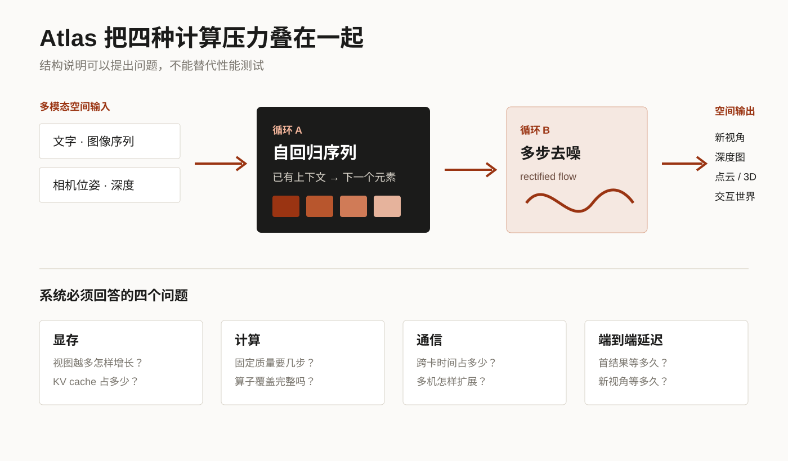
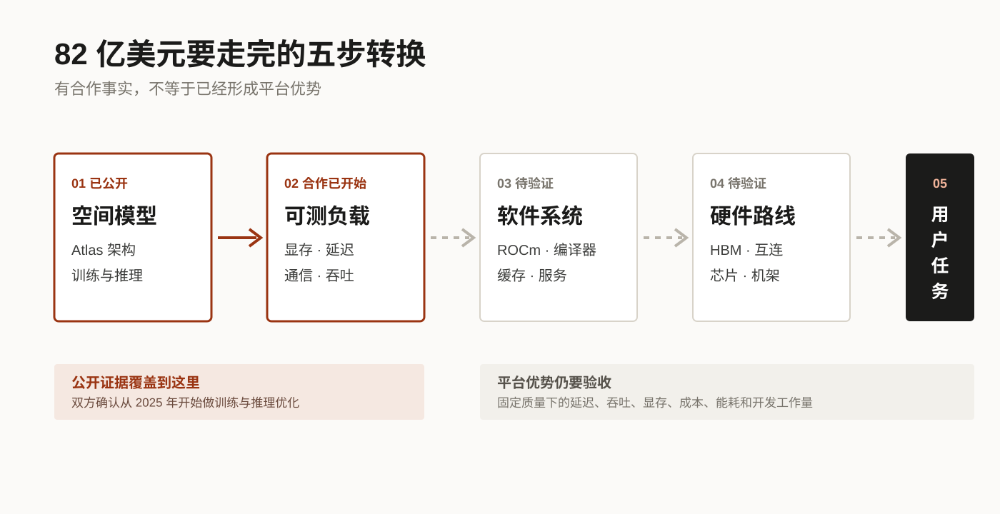

交易预计在 2026 年底前完成，仍受监管审批和其他惯常条件约束。现在能分析的是 AMD 为什么签下它；实际效果还没有发生到可以下结论。
01
为什么芯片公司要买一家模型实验室
芯片公司的典型困境，是看见问题时已经晚了。一个模型先在研究团队里成形，再进入产品，最后成为 benchmark。等硬件厂商从公开测试中发现瓶颈，架构和用户习惯往往已经固定。
World Labs 给 AMD 的，是更靠前的观察位置。双方确认合作从 2025 年开始，起点就是在 AMD GPU 上做模型训练和推理优化。这能证明 AMD 接触过真实负载，却不能证明 Atlas 已经在 AMD 上跑赢其他平台。
研究团队像一枚装在未来模型里的传感器：问题还没变成 benchmark，就能看见它怎样吃显存、等待数据和跨卡通信。
02
Atlas 为什么不是又一个大语言模型
Atlas 是多模态自回归扩散 Transformer。它一边像语言模型那样按顺序产生新元素，一边为每个连续输出反复去噪；输入还包含图像序列、相机位姿和深度，输出进入点云、Gaussian splat 或交互世界。

03
82 亿美元怎样才会变成平台优势

第一步，把模型变成可测负载。第二步，把测量结果变成 ROCm、编译器、算子、缓存和服务系统的改进。第三步，让经验进入 HBM、互连、芯片和机架的路线。第四步，让开发者能安装、迁移、调试和上线。第五步，在相同质量下证明时间、成本、能耗或开发工作量下降。
公开证据目前只让我们看见第一步已经开始，第二步存在合作。后面三步仍是待验收项目。
04
真正该看的不是峰值算力
MI400、Helios 和 ROCm 说明 AMD 有承接大模型的基础，却不能替代 Atlas 实测。以后判断交易是否奏效，应固定输出质量，检查首结果延迟、连续视角延迟、显存增长、去噪步数、多机效率、成本能耗和迁移工作量。
一张够用的验收表
- 同质量下，生成是否更快？
- 视图增加时，显存和延迟怎样增长？
- 多机扩展有多少时间花在通信？
- 开发者要改多少代码、排多少兼容问题？
- 外部团队能否按相同条件复现？
05
AMD 真正买的是提前量
World Labs 每天都在制造新的系统问题：更长的空间上下文、更复杂的生成循环、更多模态、更连续的交互。若这些问题能更早进入软件和硬件设计，AMD 就不必等公开 benchmark 定型以后再追赶。
提前看见问题不等于解决问题。这笔交易真正值钱的时刻，是研究团队发现的瓶颈稳定地变成普通开发者感受到的时间、成本和工程难度下降。
一手来源与边界
- AMD 收购公告与 Form 8-K：协议、对价和交割条件。
- World Labs 交易声明：2025 年开始的训练与推理优化合作。
- Atlas 技术说明：模型结构、输入输出和服务优化方向。
- AMD MI400 / Helios：平台公开规格，仅作背景，不作 Atlas 实测。
核验截至 2026-10-04。没有公开的 Atlas 跨平台同条件性能数据。